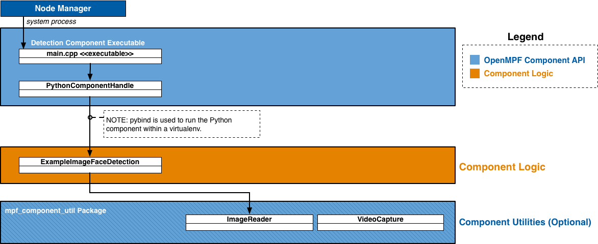

NOTICE: This software (or technical data) was produced for the U.S. Government under contract, and is subject to the Rights in Data-General Clause 52.227-14, Alt. IV (DEC 2007). Copyright 2022 The MITRE Corporation. All Rights Reserved.
API Overview
In OpenMPF, a component is a plugin that receives jobs (containing media), processes that media, and returns results.
The OpenMPF Batch Component API currently supports the development of detection components, which are used detect objects in image, video, audio, or other (generic) files that reside on disk.
Using this API, detection components can be built to provide:
- Detection (Localizing an object)
- Tracking (Localizing an object across multiple frames)
- Classification (Detecting the type of object and optionally localizing that object)
- Transcription (Detecting speech and transcribing it into text)
How Components Integrate into OpenMPF
Components are integrated into OpenMPF through the use of OpenMPF's Component Executable. Developers create component libraries that encapsulate the component detection logic. Each instance of the Component Executable loads one of these libraries and uses it to service job requests sent by the OpenMPF Workflow Manager (WFM).
The Component Executable:
- Receives and parses job requests from the WFM
- Invokes methods on the component library to obtain detection results
- Populates and sends the respective responses to the WFM
The basic pseudocode for the Component Executable is as follows:
component_cls = locate_component_class()
component = component_cls()
detection_type = component.detection_type
while True:
job = receive_job()
if is_image_job(job) and hasattr(component, 'get_detections_from_image'):
detections = component.get_detections_from_image(job)
send_job_response(detections)
elif is_video_job(job) and hasattr(component, 'get_detections_from_video'):
detections = component.get_detections_from_video(job)
send_job_response(detections)
elif is_audio_job(job) and hasattr(component, 'get_detections_from_audio'):
detections = component.get_detections_from_audio(job)
send_job_response(detections)
elif is_generic_job(job) and hasattr(component, 'get_detections_from_generic'):
detections = component.get_detections_from_generic(job)
send_job_response(detections)
Each instance of a Component Executable runs as a separate process.
The Component Executable receives and parses requests from the WFM, invokes methods on the Component Logic to get detection objects, and subsequently populates responses with the component output and sends them to the WFM.
A component developer implements a detection component by creating a class that defines one or more of the
get_detections_from_* methods and has a detection_type field.
See the API Specification for more information.
The figures below present high-level component diagrams of the Python Batch Component API. This figure shows the basic structure:

The Node Manager is only used in a non-Docker deployment. In a Docker deployment the Component Executor is started by the Docker container itself.
The Component Executor determines that it is running a Python component so it creates an instance of the
PythonComponentHandle
class. The PythonComponentHandle class creates an instance of the component class and calls one of the
get_detections_from_* methods on the component instance. The example
above is an image component, so PythonComponentHandle calls ExampleImageFaceDetection.get_detections_from_image
on the component instance. The component instance creates an instance of
mpf_component_util.ImageReader to access the image. Components that support video
would implement get_detections_from_video and use
mpf_component_util.VideoCapture instead.
This figure show the structure when the mixin classes are used:

The figure above shows a video component, ExampleVideoFaceDetection, that extends the
mpf_component_util.VideoCaptureMixin class. PythonComponentHandle will
call get_detections_from_video on an instance of ExampleVideoFaceDetection. ExampleVideoFaceDetection does not
implement get_detections_from_video, so the implementation inherited from mpf_component_util.VideoCaptureMixin
gets called. mpf_component_util.VideoCaptureMixin.get_detections_from_video creates an instance of
mpf_component_util.VideoCapture and calls
ExampleVideoFaceDetection.get_detections_from_video_capture, passing in the mpf_component_util.VideoCapture it
just created. ExampleVideoFaceDetection.get_detections_from_video_capture is where the component reads the video
using the passed-in mpf_component_util.VideoCapture and attempts to find detections. Components that support images
would extend mpf_component_util.ImageReaderMixin, implement
get_detections_from_image_reader, and access the image using the passed-in
mpf_component_util.ImageReader.
During component registration a virtualenv is created for each component.
The virtualenv has access to the built-in Python libraries, but does not have access to any third party packages
that might be installed on the system. When creating the virtualenv for a setuptools-based component the only packages
that get installed are the component itself and any dependencies specified in the setup.cfg
file (including their transitive dependencies). When creating the virtualenv for a basic Python component the only
package that gets installed is mpf_component_api. mpf_component_api is the package containing the job classes
(e.g. mpf_component_api.ImageJob,
mpf_component_api.VideoJob) and detection result classes
(e.g. mpf_component_api.ImageLocation,
mpf_component_api.VideoTrack).
How to Create a Python Component
There are two types of Python components that are supported, setuptools-based components and basic Python components. Basic Python components are quicker to set up, but have no built-in support for dependency management. All dependencies must be handled by the developer. Setuptools-based components are recommended since they use setuptools and pip for dependency management.
Either way, the end goal is to create a Docker image. This document describes the steps for developing a component outside of Docker. Many developers prefer to do that first and then focus on building and running their component within Docker after they are confident it works in a local environment. Alternatively, some developers feel confident developing their component entirely within Docker. When you're ready for the Docker steps, refer to the README.
Get openmpf-python-component-sdk
In order to create a Python component you will need to clone the
openmpf-python-component-sdk repository if you don't
already have it. While not technically required, it is recommended to also clone the
openmpf-build-tools repository.
The rest of the steps assume you cloned openmpf-python-component-sdk to
~/openmpf-projects/openmpf-python-component-sdk. The rest of the steps also assume that if you cloned the
openmpf-build-tools repository, you cloned it to ~/openmpf-projects/openmpf-build-tools.
Setup Python Component Libraries
The component packaging steps require that wheel files for mpf_component_api, mpf_component_util, and
their dependencies are available in the ~/mpf-sdk-install/python/wheelhouse directory.
If you have openmpf-build-tools, then you can run:
~/openmpf-projects/openmpf-build-tools/build-openmpf-components/build_components.py -psdk ~/openmpf-projects/openmpf-python-component-sdk
To setup the libraries manually you can run:
pip3 wheel -w ~/mpf-sdk-install/python/wheelhouse ~/openmpf-projects/openmpf-python-component-sdk/detection/api
pip3 wheel -w ~/mpf-sdk-install/python/wheelhouse ~/openmpf-projects/openmpf-python-component-sdk/detection/component_util
How to Create a Setuptools-based Python Component
In this example we create a setuptools-based video component named "MyComponent". An example of a setuptools-based Python component can be found here.
This is the recommended project structure:
ComponentName
├── pyproject.toml
├── setup.cfg
├── component_name
│ ├── __init__.py
│ └── component_name.py
└── plugin-files
├── descriptor
│ └── descriptor.json
└── wheelhouse # optional
└── my_prebuilt_lib-0.1-py3-none-any.whl
1. Create directory structure:
mkdir MyComponent
mkdir MyComponent/my_component
mkdir -p MyComponent/plugin-files/descriptor
touch MyComponent/pyproject.toml
touch MyComponent/setup.cfg
touch MyComponent/my_component/__init__.py
touch MyComponent/my_component/my_component.py
touch MyComponent/plugin-files/descriptor/descriptor.json
2. Create pyproject.toml file in project's top-level directory:
pyproject.toml should contain the following content:
[build-system]
requires = ["setuptools"]
build-backend = "setuptools.build_meta"
3. Create setup.cfg file in project's top-level directory:
Example of a minimal setup.cfg file:
[metadata]
name = MyComponent
version = 0.1
[options]
packages = my_component
install_requires =
mpf_component_api>=0.1
mpf_component_util>=0.1
[options.entry_points]
mpf.exported_component =
component = my_component.my_component:MyComponent
[options.package_data]
my_component=models/*
The name parameter defines the distribution name. Typically the distribution name matches the component name.
Any dependencies that component requires should be listed in the install_requires field.
The Component Executor looks in the entry_points element and uses the mpf.exported_component field to determine
the component class. The right hand side of component = should be the dotted module name, followed by a :,
followed by the name of the class. The general pattern is
'mpf.exported_component': 'component = <package_name>.<module_name>:<class_name>'. In the above example,
MyComponent is the class name. The module is listed as my_component.my_component because the my_component
package contains the my_component.py file and the my_component.py file contains the MyComponent class.
The [options.package_data] section is optional. It should be used when there are non-Python files
in a package directory that should be included when the component is installed.
4. Create descriptor.json file in MyComponent/plugin-files/descriptor:
The batchLibrary field should match the distribution name from the setup.cfg file. In this example the
field should be: "batchLibrary" : "MyComponent".
See the Component Descriptor Reference for details about
the descriptor format.
5. Implement your component class:
Below is an example of the structure of a simple component. This component extends
mpf_component_util.VideoCaptureMixin to simplify the use of
mpf_component_util.VideoCapture. You would replace the call to
run_detection_algorithm_on_frame with your component-specific logic.
import logging
import mpf_component_api as mpf
import mpf_component_util as mpf_util
logger = logging.getLogger('MyComponent')
class MyComponent(mpf_util.VideoCaptureMixin):
detection_type = 'FACE'
@staticmethod
def get_detections_from_video_capture(video_job, video_capture):
logger.info('[%s] Received video job: %s', video_job.job_name, video_job)
# If frame index is not required, you can just loop over video_capture directly
for frame_index, frame in enumerate(video_capture):
for result_track in run_detection_algorithm_on_frame(frame_index, frame):
# Alternatively, while iterating through the video, add tracks to a list. When done, return that list.
yield result_track
6. Optional: Add prebuilt wheel files if not available on PyPi:
If your component depends on Python libraries that are not available on PyPi, the libraries can be manually added to
your project. The prebuilt libraries must be placed in your project's plugin-files/wheelhouse directory.
The prebuilt library names must be listed in your setup.cfg file's install_requires field.
If any of the prebuilt libraries have transitive dependencies that are not available on PyPi, then those libraries
must also be added to your project's plugin-files/wheelhouse directory.
7. Optional: Create the plugin package for non-Docker deployments:
The directory structure of the .tar.gz file will be:
MyComponent
├── descriptor
│ └── descriptor.json
└── wheelhouse
├── MyComponent-0.1-py3-none-any.whl
├── mpf_component_api-0.1-py3-none-any.whl
├── mpf_component_util-0.1-py3-none-any.whl
├── numpy-1.18.4-cp38-cp38-manylinux1_x86_64.whl
└── opencv_python-4.2.0.34-cp38-cp38-manylinux1_x86_64.whl
To create the plugin packages you can run the build script as follows:
~/openmpf-projects/openmpf-build-tools/build-openmpf-components/build_components.py -psdk ~/openmpf-projects/openmpf-python-component-sdk -c MyComponent
The plugin package can also be built manually using the following commands:
mkdir -p plugin-packages/MyComponent/wheelhouse
cp -r MyComponent/plugin-files/* plugin-packages/MyComponent/
pip3 wheel -w plugin-packages/MyComponent/wheelhouse -f ~/mpf-sdk-install/python/wheelhouse -f plugin-packages/MyComponent/wheelhouse ./MyComponent/
cd plugin-packages
tar -zcf MyComponent.tar.gz MyComponent
8. Create the component Docker image:
See the README.
How to Create a Basic Python Component
In this example we create a basic Python component that supports video. An example of a basic Python component can be found here.
This is the recommended project structure:
ComponentName
├── component_name.py
├── dependency.py
└── descriptor
└── descriptor.json
1. Create directory structure:
mkdir MyComponent
mkdir MyComponent/descriptor
touch MyComponent/descriptor/descriptor.json
touch MyComponent/my_component.py
2. Create descriptor.json file in MyComponent/descriptor:
The batchLibrary field should be the full path to the Python file containing your component class.
In this example the field should be: "batchLibrary" : "${MPF_HOME}/plugins/MyComponent/my_component.py".
See the Component Descriptor Reference for details about
the descriptor format.
3. Implement your component class:
Below is an example of the structure of a simple component that does not use
mpf_component_util.VideoCaptureMixin. You would replace the call to
run_detection_algorithm with your component-specific logic.
import logging
logger = logging.getLogger('MyComponent')
class MyComponent:
detection_type = 'FACE'
@staticmethod
def get_detections_from_video(video_job):
logger.info('[%s] Received video job: %s', video_job.job_name, video_job)
return run_detection_algorithm(video_job)
EXPORT_MPF_COMPONENT = MyComponent
The Component Executor looks for a module-level variable named EXPORT_MPF_COMPONENT to specify which class
is the component.
4. Optional: Create the plugin package for non-Docker deployments:
The directory structure of the .tar.gz file will be:
ComponentName
├── component_name.py
├── dependency.py
└── descriptor
└── descriptor.json
To create the plugin packages you can run the build script as follows:
~/openmpf-projects/openmpf-build-tools/build-openmpf-components/build_components.py -c MyComponent
The plugin package can also be built manually using the following command:
tar -zcf MyComponent.tar.gz MyComponent
5. Create the component Docker image:
See the README.
API Specification
An OpenMPF Python component is a class that defines one or more of the get_detections_from_* methods and has a
detection_type field.
component.get_detections_from_* methods
All get_detections_from_* methods are invoked through an instance of the component class. The only parameter passed
in is an appropriate job object (e.g. mpf_component_api.ImageJob, mpf_component_api.VideoJob). Since the methods
are invoked through an instance, instance methods and class methods end up with two arguments, the first is either the
instance or the class, respectively. All get_detections_from_* methods can be implemented either as an instance method,
a static method, or a class method.
For example:
instance method:
class MyComponent:
def get_detections_from_image(self, image_job):
return [mpf_component_api.ImageLocation(...), ...]
static method:
class MyComponent:
@staticmethod
def get_detections_from_image(image_job):
return [mpf_component_api.ImageLocation(...), ...]
class method:
class MyComponent:
@classmethod
def get_detections_from_image(cls, image_job):
return [mpf_component_api.ImageLocation(...), ...]
All get_detections_from_* methods must return an iterable of the appropriate detection type
(e.g. mpf_component_api.ImageLocation, mpf_component_api.VideoTrack). The return value is normally a list or generator,
but any iterable can be used.
component.detection_type
strfield describing the type of object that is detected by the component. Should be in all CAPS. Examples include:FACE,MOTION,PERSON,SPEECH,CLASS(for object classification), orTEXT.- Example:
class MyComponent:
detection_type = 'FACE'
Image API
component.get_detections_from_image(image_job)
Used to detect objects in an image file.
- Method Definition:
class MyComponent:
def get_detections_from_image(self, image_job):
return [mpf_component_api.ImageLocation(...), ...]
get_detections_from_image, like all get_detections_from_* methods, can be implemented either as an instance method,
a static method, or a class method.
- Parameters:
| Parameter | Data Type | Description |
|---|---|---|
| image_job | mpf_component_api.ImageJob |
Object containing details about the work to be performed. |
- Returns: An iterable of
mpf_component_api.ImageLocation
mpf_component_api.ImageJob
Class containing data used for detection of objects in an image file.
- Members:
| Member | Data Type | Description |
|---|---|---|
| job_name | str |
A specific name given to the job by the OpenMPF framework. This value may be used, for example, for logging and debugging purposes. |
| data_uri | str |
The URI of the input media file to be processed. Currently, this is a file path. For example, "/opt/mpf/share/remote-media/test-file.jpg". |
| job_properties | dict[str, str] |
Contains a dict with keys and values of type str which represent the property name and the property value. The key corresponds to the property name specified in the component descriptor file described in the Component Descriptor Reference. Values are determined when creating a pipeline or when submitting a job.
Note: The job_properties dict may not contain the full set of job properties. For properties not contained in the dict, the component must use a default value. |
| media_properties | dict[str, str] |
Contains a dict with keys and values of type str of metadata about the media associated with the job.
Includes the following key-value pairs:
|
| feed_forward_location | None or mpf_component_api.ImageLocation |
An mpf_component_api.ImageLocation from the previous pipeline stage. Provided when feed forward is enabled. See Feed Forward Guide. |
Job properties can also be set through environment variables prefixed with MPF_PROP_. This allows
users to set job properties in their
docker-compose files.
These will take precedence over all other property types (job, algorithm, media, etc). It is not
possible to change the value of properties set via environment variables at runtime and therefore
they should only be used to specify properties that will not change throughout the entire lifetime
of the service (e.g. Docker container).
mpf_component_api.ImageLocation
Class used to store the location of detected objects in a image file.
- Constructor:
def __init__(self, x_left_upper, y_left_upper, width, height, confidence=-1.0, detection_properties=None):
...
- Members:
| Member | Data Type | Description |
|---|---|---|
| x_left_upper | int |
Upper left X coordinate of the detected object. |
| y_left_upper | int |
Upper left Y coordinate of the detected object. |
| width | int |
The width of the detected object. |
| height | int |
The height of the detected object. |
| confidence | float |
Represents the "quality" of the detection. The range depends on the detection algorithm. 0.0 is lowest quality. Higher values are higher quality. Using a standard range of [0.0 - 1.0] is advised. If the component is unable to supply a confidence value, it should return -1.0. |
| detection_properties | dict[str, str] |
A dict with keys and values of type str containing optional additional information about the detected object. For best practice, keys should be in all CAPS. |
See here for information about rotation and horizontal flipping.
- Example:
A component that performs generic object classification can add an entry to detection_properties where the key is
CLASSIFICATION and the value is the type of object detected.
mpf_component_api.ImageLocation(0, 0, 100, 100, 1.0, {'CLASSIFICATION': 'backpack'})
mpf_component_util.ImageReader
mpf_component_util.ImageReader is a utility class for accessing images. It is the image equivalent to
mpf_component_util.VideoCapture. Like mpf_component_util.VideoCapture,
it may modify the read-in frame data based on job_properties. From the point of view of someone using
mpf_component_util.ImageReader, these modifications are mostly transparent. mpf_component_util.ImageReader makes
it look like you are reading the original image file as though it has already been rotated, flipped, cropped, etc.
One issue with this approach is that the detection bounding boxes will be relative to the
modified frame data, not the original. To make the detections relative to the original image
the mpf_component_util.ImageReader.reverse_transform(image_location) method must be called on each
mpf_component_api.ImageLocation. Since the use of mpf_component_util.ImageReader is optional, the framework
cannot automatically perform the reverse transform for the developer.
The general pattern for using mpf_component_util.ImageReader is as follows:
class MyComponent:
@staticmethod
def get_detections_from_image(image_job):
image_reader = mpf_component_util.ImageReader(image_job)
image = image_reader.get_image()
# run_component_specific_algorithm is a placeholder for this example.
# Replace run_component_specific_algorithm with your component's detection logic
result_image_locations = run_component_specific_algorithm(image)
for result in result_image_locations:
image_reader.reverse_transform(result)
yield result
Alternatively, see the documentation for mpf_component_util.ImageReaderMixin for a more concise way to use
mpf_component_util.ImageReader below.
mpf_component_util.ImageReaderMixin
A mixin class that can be used to simplify the usage of mpf_component_util.ImageReader.
mpf_component_util.ImageReaderMixin takes care of initializing a mpf_component_util.ImageReader and
performing the reverse transform.
There are some requirements to properly use mpf_component_util.ImageReaderMixin:
- The component must extend
mpf_component_util.ImageReaderMixin. - The component must implement
get_detections_from_image_reader(image_job, image_reader). - The component must read the image using the
mpf_component_util.ImageReaderthat is passed in toget_detections_from_image_reader(image_job, image_reader). - The component must NOT implement
get_detections_from_image(image_job). - The component must NOT call
mpf_component_util.ImageReader.reverse_transform.
The general pattern for using mpf_component_util.ImageReaderMixin is as follows:
class MyComponent(mpf_component_util.ImageReaderMixin):
@staticmethod # Can also be a regular instance method or a class method
def get_detections_from_image_reader(image_job, image_reader):
image = image_reader.get_image()
# run_component_specific_algorithm is a placeholder for this example.
# Replace run_component_specific_algorithm with your component's detection logic
return run_component_specific_algorithm(image)
mpf_component_util.ImageReaderMixin is a mixin class so it is designed in a way that does not prevent the subclass
from extending other classes. If a component supports both videos and images, and it uses
mpf_component_util.VideoCaptureMixin, it should also use
mpf_component_util.ImageReaderMixin.
Video API
component.get_detections_from_video(video_job)
Used to detect objects in a video file. Prior to being sent to the component, videos are split into logical "segments" of video data and each segment (containing a range of frames) is assigned to a different job. Components are not guaranteed to receive requests in any order. For example, the first request processed by a component might receive a request for frames 300-399 of a Video A, while the next request may cover frames 900-999 of a Video B.
- Method Definition:
class MyComponent:
def get_detections_from_video(self, video_job):
return [mpf_component_api.VideoTrack(...), ...]
get_detections_from_video, like all get_detections_from_* methods, can be implemented either as an instance method,
a static method, or a class method.
- Parameters:
| Parameter | Data Type | Description |
|---|---|---|
| video_job | mpf_component_api.VideoJob |
Object containing details about the work to be performed. |
- Returns: An iterable of
mpf_component_api.VideoTrack
mpf_component_api.VideoJob
Class containing data used for detection of objects in a video file.
- Members:
| Member | Data Type | Description |
|---|---|---|
| job_name | str |
A specific name given to the job by the OpenMPF framework. This value may be used, for example, for logging and debugging purposes. |
| data_uri | str |
The URI of the input media file to be processed. Currently, this is a file path. For example, "/opt/mpf/share/remote-media/test-file.avi". |
| start_frame | int |
The first frame number (0-based index) of the video that should be processed to look for detections. |
| stop_frame | int |
The last frame number (0-based index) of the video that should be processed to look for detections. |
| job_properties | dict[str, str] |
Contains a dict with keys and values of type str which represent the property name and the property value. The key corresponds to the property name specified in the component descriptor file described in the Component Descriptor Reference. Values are determined when creating a pipeline or when submitting a job.
Note: The job_properties dict may not contain the full set of job properties. For properties not contained in the dict, the component must use a default value. |
| media_properties | dict[str, str] |
Contains a dict with keys and values of type str of metadata about the media associated with the job.
Includes the following key-value pairs:
|
| feed_forward_track | None or mpf_component_api.VideoTrack |
An mpf_component_api.VideoTrack from the previous pipeline stage. Provided when feed forward is enabled. See Feed Forward Guide. |
IMPORTANT:
FRAME_INTERVALis a common job property that many components support. For frame intervals greater than 1, the component must look for detections starting with the first frame, and then skip frames as specified by the frame interval, until or before it reaches the stop frame. For example, given a start frame of 0, a stop frame of 99, and a frame interval of 2, then the detection component must look for objects in frames numbered 0, 2, 4, 6, ..., 98.
Job properties can also be set through environment variables prefixed with MPF_PROP_. This allows
users to set job properties in their
docker-compose files.
These will take precedence over all other property types (job, algorithm, media, etc). It is not
possible to change the value of properties set via environment variables at runtime and therefore
they should only be used to specify properties that will not change throughout the entire lifetime
of the service (e.g. Docker container).
mpf_component_api.VideoTrack
Class used to store the location of detected objects in a video file.
- Constructor:
def __init__(self, start_frame, stop_frame, confidence=-1.0, frame_locations=None, detection_properties=None):
...
- Members:
| Member | Data Type | Description |
|---|---|---|
| start_frame | int |
The first frame number (0-based index) that contained the detected object. |
| stop_frame | int |
The last frame number (0-based index) that contained the detected object. |
| confidence | float |
Represents the "quality" of the detection. The range depends on the detection algorithm. 0.0 is lowest quality. Higher values are higher quality. Using a standard range of [0.0 - 1.0] is advised. If the component is unable to supply a confidence value, it should return -1.0. |
| frame_locations | dict[int, mpf_component_api.ImageLocation] |
A dict of individual detections. The key for each entry is the frame number where the detection was generated, and the value is a mpf_component_api.ImageLocation calculated as if that frame was a still image. Note that a key-value pair is not required for every frame between the track start frame and track stop frame. |
| detection_properties | dict[str, str] |
A dict with keys and values of type str containing optional additional information about the detected object. For best practice, keys should be in all CAPS. |
NOTE: Currently,
mpf_component_api.VideoTrack.detection_propertiesdo not show up in the JSON output object or are used by the WFM in any way.
- Example:
A component that performs generic object classification can add an entry to detection_properties where the key is
CLASSIFICATION and the value is the type of object detected.
track = mpf_component_api.VideoTrack(0, 1)
track.frame_locations[0] = mpf_component_api.ImageLocation(0, 0, 100, 100, 0.75, {'CLASSIFICATION': 'backpack'})
track.frame_locations[1] = mpf_component_api.ImageLocation(10, 10, 110, 110, 0.95, {'CLASSIFICATION': 'backpack'})
track.confidence = max(il.confidence for il in track.frame_locations.itervalues())
mpf_component_util.VideoCapture
mpf_component_util.VideoCapture is a utility class for reading videos. mpf_component_util.VideoCapture works very
similarly to cv2.VideoCapture, except that it might modify the video frames based on job properties. From the point
of view of someone using mpf_component_util.VideoCapture, these modifications are mostly transparent.
mpf_component_util.VideoCapture makes it look like you are reading the original video file as though it has already
been rotated, flipped, cropped, etc. Also, if frame skipping is enabled, such as by setting the value of the
FRAME_INTERVAL job property, it makes it look like you are reading the video as though it never contained the
skipped frames.
One issue with this approach is that the detection frame numbers and bounding box will be relative to the
modified video, not the original. To make the detections relative to the original video
the mpf_component_util.VideoCapture.reverse_transform(video_track) method must be called on each
mpf_component_api.VideoTrack. Since the use of mpf_component_util.VideoCapture is optional, the framework
cannot automatically perform the reverse transform for the developer.
The general pattern for using mpf_component_util.VideoCapture is as follows:
class MyComponent:
@staticmethod
def get_detections_from_video(video_job):
video_capture = mpf_component_util.VideoCapture(video_job)
# If frame index is not required, you can just loop over video_capture directly
for frame_index, frame in enumerate(video_capture):
# run_component_specific_algorithm is a placeholder for this example.
# Replace run_component_specific_algorithm with your component's detection logic
result_tracks = run_component_specific_algorithm(frame_index, frame)
for track in result_tracks:
video_capture.reverse_transform(track)
yield track
Alternatively, see the documentation for mpf_component_util.VideoCaptureMixin for a more concise way to use
mpf_component_util.VideoCapture below.
mpf_component_util.VideoCaptureMixin
A mixin class that can be used to simplify the usage of mpf_component_util.VideoCapture.
mpf_component_util.VideoCaptureMixin takes care of initializing a mpf_component_util.VideoCapture and
performing the reverse transform.
There are some requirements to properly use mpf_component_util.VideoCaptureMixin:
- The component must extend
mpf_component_util.VideoCaptureMixin. - The component must implement
get_detections_from_video_capture(video_job, video_capture). - The component must read the video using the
mpf_component_util.VideoCapturethat is passed in toget_detections_from_video_capture(video_job, video_capture). - The component must NOT implement
get_detections_from_video(video_job). - The component must NOT call
mpf_component_util.VideoCapture.reverse_transform.
The general pattern for using mpf_component_util.VideoCaptureMixin is as follows:
class MyComponent(mpf_component_util.VideoCaptureMixin):
@staticmethod # Can also be a regular instance method or a class method
def get_detections_from_video_capture(video_job, video_capture):
# If frame index is not required, you can just loop over video_capture directly
for frame_index, frame in enumerate(video_capture):
# run_component_specific_algorithm is a placeholder for this example.
# Replace run_component_specific_algorithm with your component's detection logic
result_tracks = run_component_specific_algorithm(frame_index, frame)
for track in result_tracks:
# Alternatively, while iterating through the video, add tracks to a list. When done, return that list.
yield track
mpf_component_util.VideoCaptureMixin is a mixin class so it is designed in a way that does not prevent the subclass
from extending other classes. If a component supports both videos and images, and it uses
mpf_component_util.VideoCaptureMixin, it should also use
mpf_component_util.ImageReaderMixin.
For example:
class MyComponent(mpf_component_util.VideoCaptureMixin, mpf_component_util.ImageReaderMixin):
@staticmethod
def get_detections_from_video_capture(video_job, video_capture):
...
@staticmethod
def get_detections_from_image_reader(image_job, image_reader):
...
Audio API
component.get_detections_from_audio(audio_job)
Used to detect objects in an audio file.
- Method Definition:
class MyComponent:
def get_detections_from_audio(self, audio_job):
return [mpf_component_api.AudioTrack(...), ...]
get_detections_from_audio, like all get_detections_from_* methods, can be implemented either as an instance method,
a static method, or a class method.
- Parameters:
| Parameter | Data Type | Description |
|---|---|---|
| audio_job | mpf_component_api.AudioJob |
Object containing details about the work to be performed. |
- Returns: An iterable of
mpf_component_api.AudioTrack
mpf_component_api.AudioJob
Class containing data used for detection of objects in an audio file. Currently, audio files are not logically segmented, so a job will contain the entirety of the audio file.
- Members:
| Member | Data Type | Description |
|---|---|---|
| job_name | str |
A specific name given to the job by the OpenMPF framework. This value may be used, for example, for logging and debugging purposes. |
| data_uri | str |
The URI of the input media file to be processed. Currently, this is a file path. For example, "/opt/mpf/share/remote-media/test-file.mp3". |
| start_time | int |
The time (0-based index, in milliseconds) associated with the beginning of the segment of the audio file that should be processed to look for detections. |
| stop_time | int |
The time (0-based index, in milliseconds) associated with the end of the segment of the audio file that should be processed to look for detections. |
| job_properties | dict[str, str] |
Contains a dict with keys and values of type str which represent the property name and the property value. The key corresponds to the property name specified in the component descriptor file described in the Component Descriptor Reference. Values are determined when creating a pipeline or when submitting a job.
Note: The job_properties dict may not contain the full set of job properties. For properties not contained in the dict, the component must use a default value. |
| media_properties | dict[str, str] |
Contains a dict with keys and values of type str of metadata about the media associated with the job.
Includes the following key-value pairs:
|
| feed_forward_track | None or mpf_component_api.AudioTrack |
An mpf_component_api.AudioTrack from the previous pipeline stage. Provided when feed forward is enabled. See Feed Forward Guide. |
Job properties can also be set through environment variables prefixed with MPF_PROP_. This allows
users to set job properties in their
docker-compose files.
These will take precedence over all other property types (job, algorithm, media, etc). It is not
possible to change the value of properties set via environment variables at runtime and therefore
they should only be used to specify properties that will not change throughout the entire lifetime
of the service (e.g. Docker container).
mpf_component_api.AudioTrack
Class used to store the location of detected objects in an audio file.
- Constructor:
def __init__(self, start_time, stop_time, confidence, detection_properties=None):
...
- Members:
| Member | Data Type | Description |
|---|---|---|
| start_time | int |
The time (0-based index, in ms) when the audio detection event started. |
| stop_time | int |
The time (0-based index, in ms) when the audio detection event stopped. |
| confidence | float |
Represents the "quality" of the detection. The range depends on the detection algorithm. 0.0 is lowest quality. Higher values are higher quality. Using a standard range of [0.0 - 1.0] is advised. If the component is unable to supply a confidence value, it should return -1.0. |
| detection_properties | dict[str, str] |
A dict with keys and values of type str containing optional additional information about the detected object. For best practice, keys should be in all CAPS. |
NOTE: Currently,
mpf_component_api.AudioTrack.detection_propertiesdo not show up in the JSON output object or are used by the WFM in any way.
Generic API
component.get_detections_from_generic(generic_job)
Used to detect objects in files that are not video, image, or audio files. Such files are of the UNKNOWN type and handled generically.
- Method Definition:
class MyComponent:
def get_detections_from_generic(self, generic_job):
return [mpf_component_api.GenericTrack(...), ...]
get_detections_from_generic, like all get_detections_from_* methods, can be implemented either as an instance method,
a static method, or a class method.
- Parameters:
| Parameter | Data Type | Description |
|---|---|---|
| generic_job | mpf_component_api.GenericJob |
Object containing details about the work to be performed. |
- Returns: An iterable of
mpf_component_api.GenericTrack
mpf_component_api.GenericJob
Class containing data used for detection of objects in a file that isn't a video, image, or audio file. The file is not logically segmented, so a job will contain the entirety of the file.
- Members:
| Member | Data Type | Description |
|---|---|---|
| job_name | str |
A specific name given to the job by the OpenMPF framework. This value may be used, for example, for logging and debugging purposes. |
| data_uri | str |
The URI of the input media file to be processed. Currently, this is a file path. For example, "/opt/mpf/share/remote-media/test-file.txt". |
| job_properties | dict[str, str] |
Contains a dict with keys and values of type str which represent the property name and the property value. The key corresponds to the property name specified in the component descriptor file described in the Component Descriptor Reference. Values are determined when creating a pipeline or when submitting a job.
Note: The job_properties dict may not contain the full set of job properties. For properties not contained in the dict, the component must use a default value. |
| media_properties | dict[str, str] |
Contains a dict with keys and values of type str of metadata about the media associated with the job.
Includes the following key-value pair:
|
| feed_forward_track | None or mpf_component_api.GenericTrack |
An mpf_component_api.GenericTrack from the previous pipeline stage. Provided when feed forward is enabled. See Feed Forward Guide. |
Job properties can also be set through environment variables prefixed with MPF_PROP_. This allows
users to set job properties in their
docker-compose files.
These will take precedence over all other property types (job, algorithm, media, etc). It is not
possible to change the value of properties set via environment variables at runtime and therefore
they should only be used to specify properties that will not change throughout the entire lifetime
of the service (e.g. Docker container).
mpf_component_api.GenericTrack
Class used to store the location of detected objects in a file that is not a video, image, or audio file.
- Constructor:
def __init__(self, confidence=-1.0, detection_properties=None):
...
- Members:
| Member | Data Type | Description |
|---|---|---|
| confidence | float |
Represents the "quality" of the detection. The range depends on the detection algorithm. 0.0 is lowest quality. Higher values are higher quality. Using a standard range of [0.0 - 1.0] is advised. If the component is unable to supply a confidence value, it should return -1.0. |
| detection_properties | dict[str, str] |
A dict with keys and values of type str containing optional additional information about the detected object. For best practice, keys should be in all CAPS. |
How to Report Errors
The following is an example of how to throw an exception:
import mpf_component_api as mpf
...
raise mpf.DetectionError.MISSING_PROPERTY.exception(
'The REALLY_IMPORTANT property must be provided as a job property.')
The Python Batch Component API supports all of the same error types
listed here for the C++ Batch Component API. Be sure to omit
the MPF_ prefix. You can replace the MISSING_PROPERTY part in the above code with any other error type. When
generating an exception, choose the type that best describes your error.
Python Component Build Environment
All Python components must work with CPython 3.8.10. Also, Python components
must work with the Linux version that is used by the OpenMPF Component
Executable. At this writing, OpenMPF runs on
Ubuntu 20.04 (kernel version 5.13.0-30). Pure Python code should work on any
OS, but incompatibility issues can arise when using Python libraries that
include compiled extension modules. Python libraries are typically distributed
as wheel files. The wheel format requires that the file name follows the pattern
of <dist_name>-<version>-<python_tag>-<abi_tag>-<platform_tag>.whl.
<python_tag>-<abi_tag>-<platform_tag> are called
compatibility tags. For example,
mpf_component_api is pure Python, so the name of its wheel file is
mpf_component_api-0.1-py3-none-any.whl. py3 means it will work with any
Python 3 implementation because it does not use any implementation-specific
features. none means that it does not use the Python ABI. any means it will
work on any platform.
The following combinations of compatibility tags are supported:
cp38-cp38-manylinux2014_x86_64cp38-cp38-manylinux2010_x86_64cp38-cp38-manylinux1_x86_64cp38-cp38-linux_x86_64cp38-abi3-manylinux2014_x86_64cp38-abi3-manylinux2010_x86_64cp38-abi3-manylinux1_x86_64cp38-abi3-linux_x86_64cp38-none-manylinux2014_x86_64cp38-none-manylinux2010_x86_64cp38-none-manylinux1_x86_64cp38-none-linux_x86_64cp37-abi3-manylinux2014_x86_64cp37-abi3-manylinux2010_x86_64cp37-abi3-manylinux1_x86_64cp37-abi3-linux_x86_64cp36-abi3-manylinux2014_x86_64cp36-abi3-manylinux2010_x86_64cp36-abi3-manylinux1_x86_64cp36-abi3-linux_x86_64cp35-abi3-manylinux2014_x86_64cp35-abi3-manylinux2010_x86_64cp35-abi3-manylinux1_x86_64cp35-abi3-linux_x86_64cp34-abi3-manylinux2014_x86_64cp34-abi3-manylinux2010_x86_64cp34-abi3-manylinux1_x86_64cp34-abi3-linux_x86_64cp33-abi3-manylinux2014_x86_64cp33-abi3-manylinux2010_x86_64cp33-abi3-manylinux1_x86_64cp33-abi3-linux_x86_64cp32-abi3-manylinux2014_x86_64cp32-abi3-manylinux2010_x86_64cp32-abi3-manylinux1_x86_64cp32-abi3-linux_x86_64py38-none-manylinux2014_x86_64py38-none-manylinux2010_x86_64py38-none-manylinux1_x86_64py38-none-linux_x86_64py3-none-manylinux2014_x86_64py3-none-manylinux2010_x86_64py3-none-manylinux1_x86_64py3-none-linux_x86_64py37-none-manylinux2014_x86_64py37-none-manylinux2010_x86_64py37-none-manylinux1_x86_64py37-none-linux_x86_64py36-none-manylinux2014_x86_64py36-none-manylinux2010_x86_64py36-none-manylinux1_x86_64py36-none-linux_x86_64py35-none-manylinux2014_x86_64py35-none-manylinux2010_x86_64py35-none-manylinux1_x86_64py35-none-linux_x86_64py34-none-manylinux2014_x86_64py34-none-manylinux2010_x86_64py34-none-manylinux1_x86_64py34-none-linux_x86_64py33-none-manylinux2014_x86_64py33-none-manylinux2010_x86_64py33-none-manylinux1_x86_64py33-none-linux_x86_64py32-none-manylinux2014_x86_64py32-none-manylinux2010_x86_64py32-none-manylinux1_x86_64py32-none-linux_x86_64py31-none-manylinux2014_x86_64py31-none-manylinux2010_x86_64py31-none-manylinux1_x86_64py31-none-linux_x86_64py30-none-manylinux2014_x86_64py30-none-manylinux2010_x86_64py30-none-manylinux1_x86_64py30-none-linux_x86_64cp38-none-anypy38-none-anypy3-none-anypy37-none-anypy36-none-anypy35-none-anypy34-none-anypy33-none-anypy32-none-anypy31-none-anypy30-none-any
The list above was generated with the following command:
python3 -c 'import pip._internal.pep425tags as tags; print("\n".join(str(t) for t in tags.get_supported()))'
Components should be supplied as a tar file, which includes not only the component library, but any other libraries or files needed for execution. This includes all other non-standard libraries used by the component (aside from the standard Python libraries), and any configuration or data files.
Component Development Best Practices
Single-threaded Operation
Implementations are encouraged to operate in single-threaded mode. OpenMPF will parallelize components through multiple instantiations of the component, each running as a separate service.
Stateless Behavior
OpenMPF components should be stateless in operation and give identical output for a provided input (i.e. when processing the same job).
Logging
It recommended that components use Python's built-in
logging module. The component should
import logging and call logging.getLogger('<componentName>') to get a logger instance.
The component should not configure logging itself. The Component Executor will configure the
logging module for the component. The logger will write log messages to standard error and
${MPF_LOG_PATH}/${THIS_MPF_NODE}/log/<componentName>.log. Note that multiple instances of the
same component can log to the same file. Also, logging content can span multiple lines.
The following log levels are supported: FATAL, ERROR, WARN, INFO, DEBUG.
The LOG_LEVEL environment variable can be set to one of the log levels to change the logging
verbosity. When LOG_LEVEL is absent, INFO is used.
The format of the log messages is:
DATE TIME LEVEL [SOURCE_FILE:LINE_NUMBER] - MESSAGE
For example:
2018-05-03 14:41:11,703 INFO [test_component.py:44] - Logged message